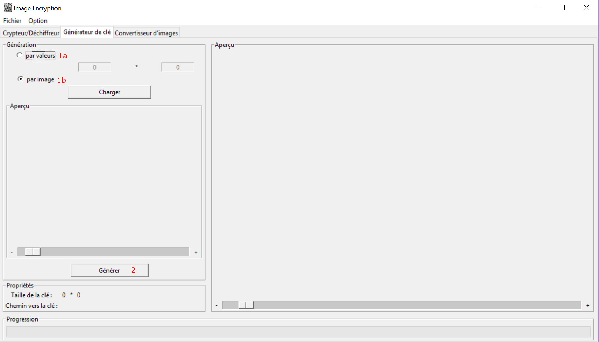
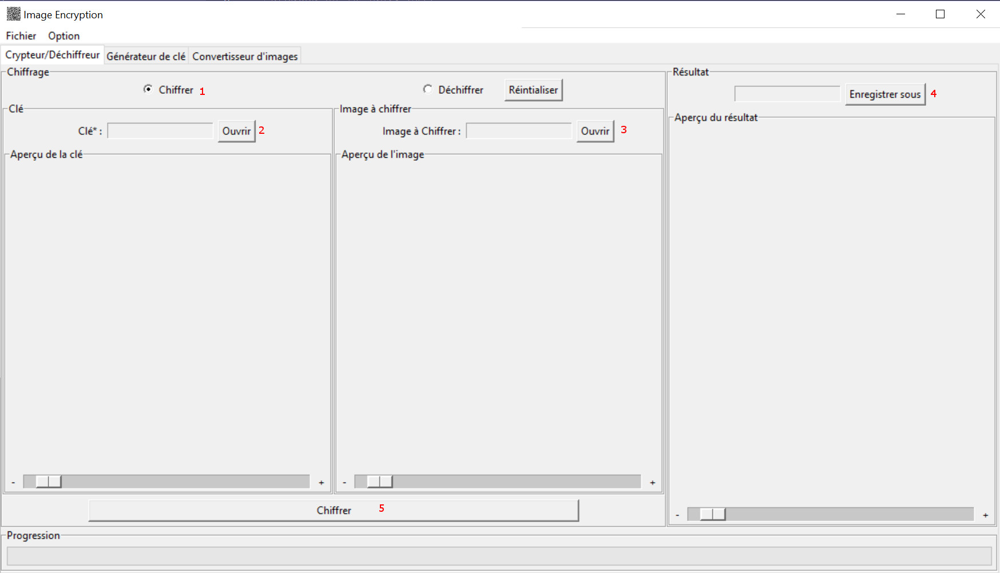
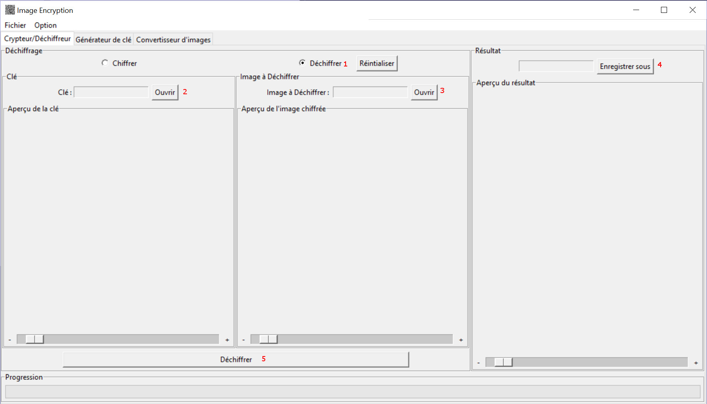

L'application utilise des images au format .ppm. Ces images se doivent d'être en noir et blanc, et leur taille doir être pair (600x800 par exemple, mais pas 605x700)
Pour convertir vos propres images, cliquez sur l'onglet 'Convertisseur d'images'. Dans l'interface, vous trouverez deux champs :
Le plugin 'Générateur de clé' vous permet de générer une clé de taille définie. Pour cela, cliquez sur l'onglet du plugin. Pour spécifier la taille de l'image, deux choix s'offrent à vous :
Une fois les dimensions de la clé obtenues, cliquez sur 'Générer' en bas à gauche de la fenêtre. Le programme vous demandera où vous souhaitez sauvegarder votre clé fraîchement générée. Laissez l'extension vide, elle sera remplie automatiquement.
Il est également possible de générer une clé à la volée dans le plugin Cypherer, cela sera expliqué dans le point suivant.
Pour commencer, rendez-vous dans l'onglet 'Chiffrer/Déchiffrer'. Ce plugin vous permet d'une part de chiffrer des images à partir d'une clé, et d'autre part de déchiffrer des images. Concentrons-nous sur le chiffrement d'une image. Assurez vous que l'option 'Chiffrer' est sélectionnée. Si vous avez généré votre propre clé comme à l'étape précédente, appuyez sur Ouvrir dans la partie 'Clé' et choisissez votre fichier. Si vous souhaitez générer cette clé à la volée, laissez ce champ vide. il vous sera demandé un emplacement pour enregistrer la clé plus tard. Il faut maintenant remplir la zone 'Image à chiffrer'. En appuyant sur le bouton 'Ouvrir', vous pourrez spécifier l'image (dans le format approprié, probablement celle créée avec le 'Convertisseur d'images') que vous souhaitez chiffrer. Dernière étape : dans la zone 'Résultat', cliquez sur le bouton 'Enregistrer sous' et donner un nom à votre future image chiffrée. Une fois que vous êtes prêts, cliquez sur 'Chiffrer' et laissez la magie opérer !
Le principe est similaire. Assurez-vous que l'option 'Déchiffrer' est sélectionnée. Dans la partie clé, entrer le nom du fichier de votre clé. Dans la partie 'Image à Déchiffrer', indiquez le nom du fichier qui contient otre image chiffrée. Enfin, entrez un nom dans la partie résultat pour votre future image en clair. Une fois que vous êtes prêts, appuyer sur le bouton 'Déchiffrer'.
Comme vous avez pu le constater, l'application affiche les images au fur et à mesure qu'elles sont sélectionnées. Il est possible d'agrandir et de ce déplacer dans celles-i à l'aide du curseur et des barres de défilement, ou encore en maintenant le bouton gauche de la souris enfoncé et en déplaçant la souris. Il vous est donc possible de voir en détail les images.